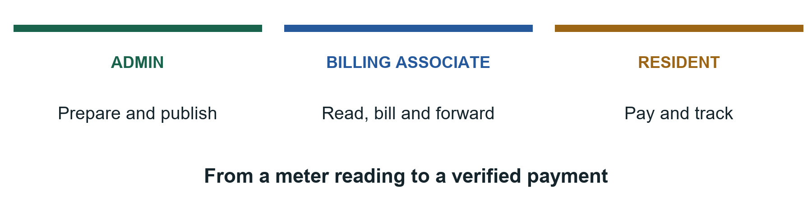
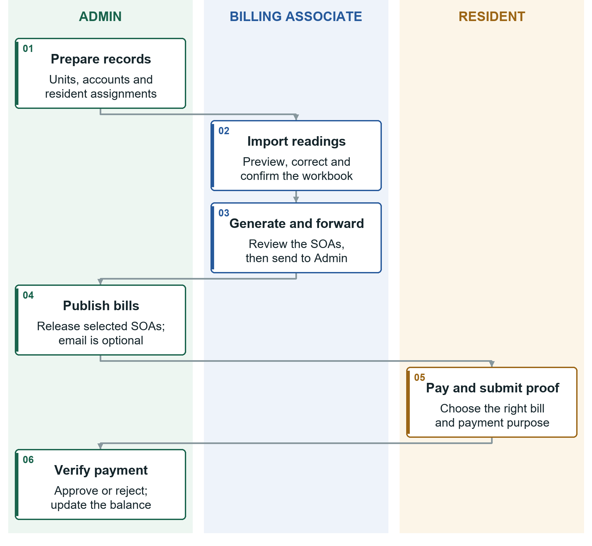
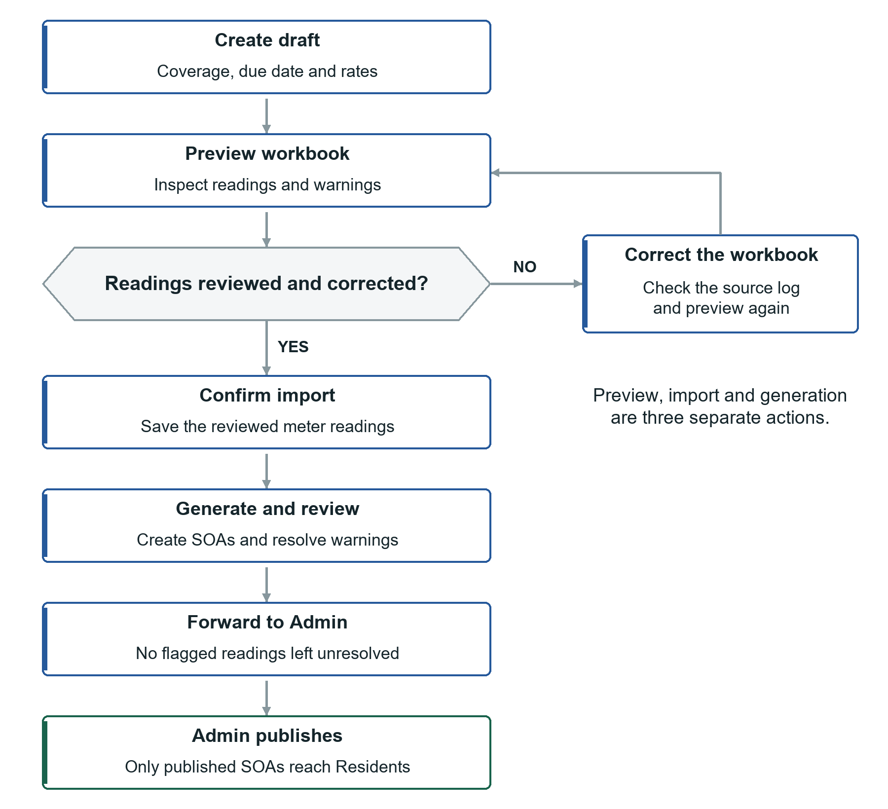
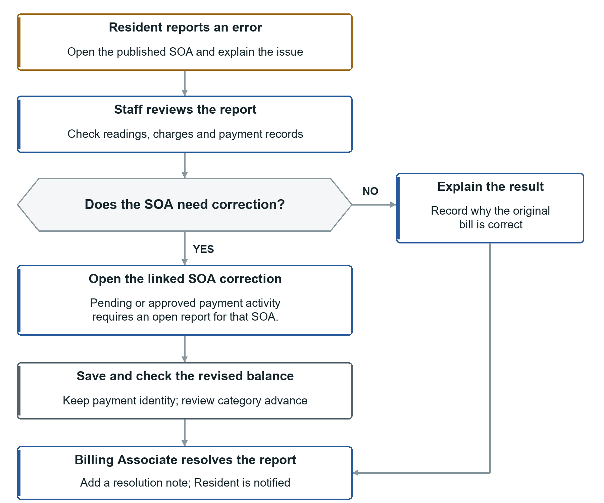
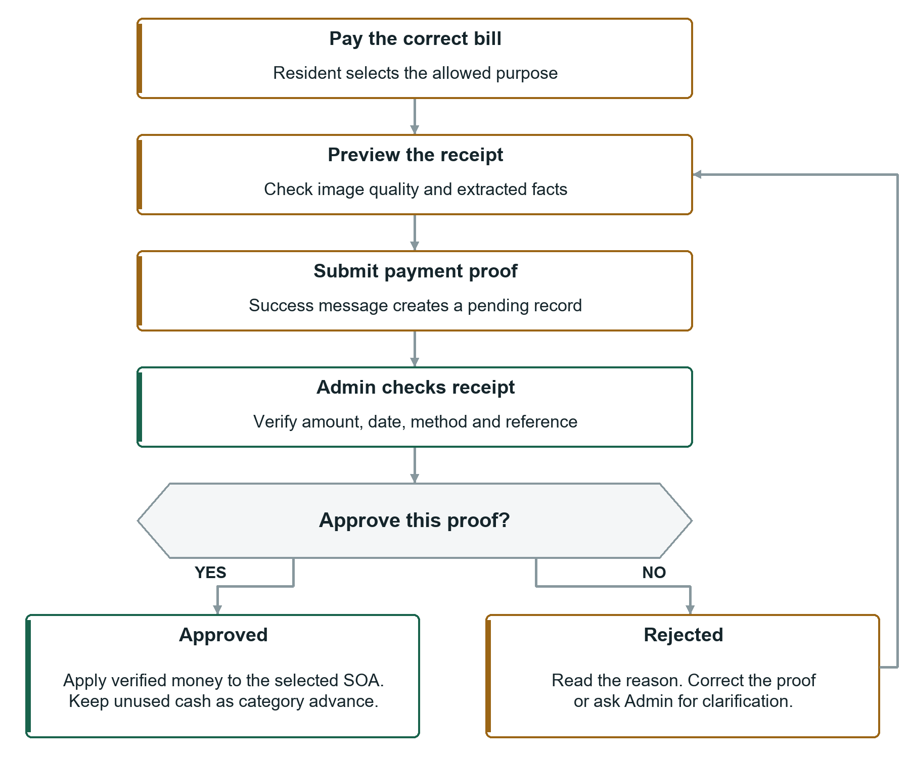

OPERATIONS HANDBOOK
RSG Condo User Manual
Billing and Payment Workflows
A visual guide to preparing accurate bills, publishing Statements of Account and following a payment from receipt to verified balance.

Start with the workflow for your task
See who acts next, what must be checked and what to do when something needs correction. Then use the numbered task instructions to complete the action in the system.
Use This Guide
Use this guide to prepare bills, publish Statements of Account, submit receipts and check payments. Start with your role and follow the steps for the task you need.
ALL ROLES / CHOOSE YOUR TASK AND FOLLOW ITS WORKFLOW
Choose your role
| Role | Your main tasks |
|---|---|
| Admin | Manage accounts and units, set the SOA template, publish bills and approve payments. |
| Billing Associate | Prepare readings and bills, forward them to Admin, correct bills and resolve reports. Technical records call this role Collector. |
| Resident | Read published bills for your assigned unit, upload receipts and check payment history. |
The monthly process
Open the monthly workflow to see the handoffs between all three roles. For an individual task, use the matching workflow below and then its detailed instructions.
- Billing preparation workflow and section 5
- Receipt and approval workflow and sections 4 and 8
- Billing correction workflow and section 6
Find your task
- 1 Accounts and navigation
- 2 Admin accounts and units
- 3 Admin template and publication
- 4 Admin payments
- 5 Prepare monthly bills
- 6 Correct bills and reports
- 7 Resident bills
- 8 Resident receipts and history
- 9 Balances and statuses
- 10 Analytics and reports
- 11 Prepare files and history
- 12 Common problems and checks
The Monthly Workflow
ALL ROLES / READ TOP TO BOTTOM AND FOLLOW THE ARROWS
Each lane names the person responsible. A handoff means the next role must complete its action before the process can continue.

Three checkpoints: forwarding is not publication, preview is not submission, and a pending proof is not an approved payment.
1 Accounts and Navigation
ALL ROLES / START WITH AN ACTIVE ACCOUNT AND THE CORRECT UNIT ACCESS
Sign in
- Open the address provided by the administrator.
- Enter your email and password. Use the eye icon to check the password if needed.
- Select Sign in. Your role determines which home page opens.
Create a Resident account
- Use the registration link on the sign-in page.
- Enter your name, email and a password of 8 to 72 characters. Submit.
- Follow the verification link in your email, or ask Admin to approve your account.
- Sign in after activation. Ask Admin to assign your account to your unit.
Recover or change your password
For a forgotten password, use the recovery link from sign-in, enter your email and follow the reset link in your inbox. Check spam. If email is unavailable, ask Admin. Resetting signs out older sessions.
A signed-in Resident can open Profile, enter the current and new password, confirm it and save. Ask Admin to correct your name or email.
Find pages and notifications
- Staff pages are under View and Manage. On a narrow screen, use the menu icon to open the sidebar.
- Resident phone navigation has Home, Bills, Payments and Profile.
- Use the bell for new bills, payment decisions and resolved reports. Select an alert to open its page.
- The account menu has Profile, Settings and Sign out. Compact-sidebar settings apply to this browser.
Before leaving: sign out on shared devices. For a disabled button, read the nearby message and check the record status before trying again.
Common terms
SOA means Statement of Account. A batch groups a period's bills. OCR reads receipt text. Advance is approved category credit not yet used. The primary payer is the Resident selected as the bill's main payer.
2 Admin Accounts and Units
ADMIN / FINISH WITH CORRECT ACCOUNTS UNITS AND ASSIGNMENTS
Prepare these records before the Billing Associate creates monthly bills.
Create or approve an account
- Open Manage > User Management.
- To create an account, select Add user, complete the name, email, password and role, then save.
- For pending registration, find the account and select Approve.
- Use Edit to correct details or set a new password. Leave the new-password field blank if no password change is needed.
Deactivate blocks access while keeping history. Activate restores access. Delete only an incorrect account after reviewing the confirmation; you cannot delete your own. Follow password-confirmation prompts.
Add or edit a unit
- Open Manage > Unit Management.
- Select Add unit, or Edit an existing unit.
- Check unit number, floor, billable area in square meters and occupancy.
- Save, then confirm the record in View > Unit Directory.
Assign a Resident
- In Unit Management, edit the unit and use its resident-assignment controls.
- Choose the Resident, select Owner or Tenant and check assignment details.
- Set the primary payer when applicable, then save.
- Confirm the name and relationship in Unit Directory.
Tenant-only assignments may pay water only. Owners may pay water, association dues or both.
When someone moves out: end the assignment and update occupancy. Mark a valid unit vacant instead of deleting it. Ending assignment removes current access while keeping history.
3 Admin Template and Publication
ADMIN / FINISH WITH REVIEWED SOAS VISIBLE TO THE CORRECT RESIDENTS
Set the SOA template
- Open Manage > SOA Template.
- Check company/address, statement title, payment channel and account details.
- Review signatory names, notices, footer, colors and layout.
- Upload or replace logo/payment QR images if needed. Check the preview.
- Select Save SOA settings.
Review and publish
- Open View > Forward Billings and the forwarded batch.
- Review each SOA: unit, payer, coverage, readings, rates, total and due date.
- Check the hidden SOAs to release and choose Publish selected, or choose Publish all remaining.
- Choose Publish only, or Publish & send emails.
- Confirm the bills show as published. If emailing, check delivery status after processing.
Result: assigned Residents can open published SOAs. Forwarding alone does not make bills visible.
If email fails or a bill must be hidden
Retry failed delivery using its email action. Resending sends another copy to saved recipients. Publication may succeed even if email fails; do not keep publishing to retry mail.
Use Unpublish and confirm Unpublish SOA to hide a bill for review. Residents lose access immediately. Sent email cannot be recalled. Publish again when ready.
Before release: confirm the payment account/QR, expected unit bills and any reading warnings.
4 Admin Payments
ADMIN / START WITH A RECEIPT AND FINISH WITH A VERIFIED DECISION
Approve or reject a receipt
- Open View > Payment Records, filter pending records and choose Review.
- Check the payment purpose and compare the receipt with detected amount/reference/date. OCR reads text automatically and can be wrong.
- Select Approve. Confirm verified amount, actual payment date, method and transaction reference.
- Wait for the allocation preview. Check designated water/association amounts.
- Select Approve payment, then check final status, applied amount and advance.
- For rejection, choose Reject, enter a clear reason and select Reject payment.
Rejected proof does not reduce the bill. Only rejected proofs can be deleted. An approved transaction reference cannot be reused.
Record money received directly
- In Payment Records, select Record payment.
- Choose Apply to SOA and the exact bill, or Advance Credit and the unit.
- Select purpose/method; enter amount, payment date, transaction reference and optional remarks.
- Check designated amounts and category advances. Wait for successful preview, then select Record payment.
Add an invoice reference
Open the approved payment or SOA invoice section. Expand the water/association entry, enter its invoice number and save. Each partial payment keeps its own reference. A combined payment may share one invoice across both categories.
See section 9 for applied money and advances. Use View > Activity Log to review who changed a record and when.
Billing Preparation Workflow
BILLING ASSOCIATE THEN ADMIN / USE BEFORE SECTION 5
Prepare one period at a time. Review and correct the workbook before confirming the import, then review the generated SOAs before forwarding.

Before you start: check unit areas, assignments, payment details and the current rates with Admin. Finish: a reviewed batch is forwarded for Admin publication.
5 Prepare Monthly Bills
BILLING ASSOCIATE / PREVIEW THEN SAVE THEN GENERATE
Role: Billing Associate. Before starting, ask Admin to confirm unit areas, resident assignments and the SOA payment details.
Create the period
- Open Manage > Create Billing.
- Enter Period start, Period end and Due date.
- Set water rate per cubic meter, association-dues rate per square meter and late penalty percentage.
- Select Create draft. Confirm the correct period is selected.
Import meter readings
- Choose the workbook for this period. Use the format in section 11.
- Select Preview file. Review unit count, readings, consumption, charges, errors and warnings.
- Correct errors in the workbook and preview again. Investigate flagged readings rather than guessing a replacement value.
- Select Confirm import. Check the saved-reading count.
Generate and forward
- Check period, rates and saved readings. Select Generate bills, then Generate final bills in the confirmation.
- In View > Forward Billings, choose View batch and review individual SOAs.
- Correct warning bills before release. Missing or flagged readings may produce zero water charge with a warning; they are not proof of zero usage.
- When ready, select Forward to Admin. Flagged readings must be resolved before forwarding.
Result: Admin can review the batch. Residents see their SOAs only after Admin publishes them.
To revise an unforwarded generated batch, use Reopen batch. This removes generated SOAs and keeps readings so you can generate again. Review the confirmation before deleting any batch.
Billing Correction Workflow
RESIDENT AND STAFF / USE WITH SECTION 6
Start with the reported issue and check the supporting records. Correct the SOA only when needed, then resolve the report with an explanation.

Keep the payment record: correction recalculates applications and any category advance. Do not delete a payment to bypass correction protection.
6 Correct Bills and Reports
STAFF / FINISH WITH AN ACCURATE SOA AND A CLEAR RESOLUTION NOTE
Roles: Admin and Billing Associate may correct eligible SOAs. Billing Associate resolves resident error reports.
Correct a bill without payment activity
- Open the batch in Forward Billings, then the affected SOA.
- Choose Correct SOA. Check payer, dates, readings and charge details.
- Enter a clear Reason for correction.
- Select Save corrected SOA and check the updated document and totals.
Water quantity follows the corrected previous/current readings. Supply both readings together. Do not change a reading simply to force a preferred charge.
If the SOA already has a pending or approved payment
Normal billing-detail edits are protected. They require an open Billing Error report for that SOA. Payment notes and permitted invoice references can still be edited separately.
- Resident opens the bill, selects Report error and explains the issue.
- Staff opens Manage > Billing Errors and reviews the open report.
- For a correction, open the SOA in the context of that report. If that action is unavailable on your screen, ask the system administrator to help open the linked correction; do not delete the payment.
- Correct the details, give the reason and save. Check the recalculated balance and advance.
- Billing Associate returns to the report, chooses Resolve report, enters a resolution note and confirms.
Tell the Resident what changed
Published corrections can trigger an updated-bill notification and email delivery attempts. Confirm the latest bill and delivery status. A resolution note should say what was fixed or why the original charge is correct.
Example note: Previous reading corrected from 100 to 102 after checking the meter log. Water charge and remaining balance recalculated.
Residents can submit up to three reports per SOA. Resolved reports count toward this limit.
7 Resident Bills
RESIDENT / CHECK THE UNIT PERIOD PURPOSE AND PAYABLE BALANCE
Find and read your bill
- Open Overview or My Bills. On a phone, use Home or Bills.
- If you have more than one assigned unit, choose the correct unit.
- Open the bill for the correct month. Check unit, coverage period, due date and readings.
- Review water and association charges, approved payments and balance.
Understand your payment choices
- A tenant-only assignment may pay Water.
- An owner may choose Water, Association Dues or Water + Association Dues.
- Your payable balance may differ from the full SOA. A tenant can have water paid while association dues remain unpaid.
Example: the SOA contains water PHP 58.90 and association dues PHP 1,608.84. A tenant who pays the water PHP 58.90 owes no more water on this bill, but the full SOA still has association dues outstanding.
Pay using the official details
- Check the payment account and purpose before sending money.
- If available, use Scan to pay to open the payment QR. Pay through your payment app and keep the receipt.
- Return to the correct SOA and upload the receipt as described in section 8.
Opening the QR does not record or approve a payment. The system needs your receipt submission and Admin verification.
Print or report an error
Use Print / PDF on the Resident bill, then select a printer or Save as PDF in the browser dialog. Viewer zoom changes viewing size, not the amount due.
Select Report error, choose the issue category, explain what looks wrong and select Send error report. Check notifications for a reply. For assignment/account mistakes, contact Admin.
Receipt and Approval Workflow
RESIDENT THEN ADMIN / USE WITH SECTIONS 4 AND 8
Payment happens through the official payment channel. The uploaded receipt then provides evidence for Admin review.

What changes the balance: Admin approval applies verified money. OCR preview only reads the image. Manual Admin payments are approved immediately and do not use the resident pending-review path.
8 Resident Receipts and History
RESIDENT / FINISH WITH A SAVED SUBMISSION AND CHECK ITS REVIEW STATUS
Prepare a clear receipt
- Use JPG/JPEG or PNG, no more than 5 MB. Keep the original receipt.
- Use a clear, well-lit image with readable amount, reference and payment date.
- Keep the receipt flat and avoid glare, blur and cropped text. Use at least 600 by 600 pixels.
- Submit proof for the correct unit, bill and purpose. Do not submit the same payment twice.
Preview and submit
- Open the SOA and choose the permitted payment purpose.
- Select Upload receipt, then choose the image.
- Select Preview OCR. Review image quality and detected amount, reference and date.
- If the image is unreadable or rejected, take a clearer photo and preview again. If clear text is misread, remember that Admin verifies the final facts.
- Select Submit payment proof. Wait for the submission-success message.
- Open Payment History to confirm the pending record.
Read the result
| History status | What to do |
|---|---|
| Pending | Wait for review. Do not upload another copy just because the balance has not changed. |
| Approved | Check verified amount, applied money, category advance and invoice references. Reopen the bill to check balance. |
| Rejected | Read Admin remarks. Correct the issue and submit valid proof, or contact Admin if the decision needs clarification. |
If Upload receipt is unavailable, check your purpose, payable balance and any displayed message. A settled water charge does not accept another water proof even if association dues remain.
Need help? Give Admin the unit, billing month, transaction reference and submission time. Keep payment images and personal details within authorized channels.
9 Balances and Statuses
ALL ROLES / DISTINGUISH BILL BALANCE PAYMENT REVIEW AND CATEGORY ADVANCE
Where the amounts come from
Water consumption is present reading minus previous reading. Water charge is consumption times the water rate. Association dues are billable area times the association rate per square meter.
Example: readings 100 to 108 give 8 cubic meters. At PHP 50 each, water is PHP 400. An area of 30 square meters at PHP 20 each gives PHP 600 association dues. Total before penalties/payments is PHP 1,000.
If the configured late penalty is 5% and association principal is fully unpaid after due date, it adds PHP 30. Water has no late penalty under the current policy. A verified payment made by due date may change the penalty even when approved later.
Applied payment and advance credit
Applied money reduces a bill. Advance credit is approved money reserved in a category but not used yet. Water advance stays water; association advance stays association.
A Water + Association Dues payment covers association principal and penalty before water. Excess from that combined purpose remains association advance. Approval pays the selected SOA; it does not automatically sweep other existing bills. Future bill generation can use eligible advances.
| Payment example | Result |
|---|---|
| Water due PHP 58.90; approve water PHP 100 | Water paid PHP 58.90; water advance PHP 41.10. |
| Association PHP 1,608.84 and water PHP 58.90; approve combined PHP 1,650 | Association settled; PHP 41.16 pays water; water balance PHP 17.74. |
Read statuses correctly
Draft: bill preparation. Generated: SOAs created. Forwarded: sent to Admin for review. Published/hidden belongs to each SOA; a fully published batch may still say Forwarded. Closed is a retained status also used for history imports.
Unpaid: no approved applied payment. Partial: some approved money applied but balance remains. Paid: covered balance. Overdue: unpaid balance after due date. Always check due date and remaining amount along with the label.
Pending, Approved and Rejected describe payment review, not the bill. For tenants, a water-payable status can differ from the full SOA status.
10 Analytics and Reports
RESIDENT AND STAFF / USE ESTIMATES TO INFORM REVIEW
Resident water information
Open Overview and choose your unit. Review recent consumption, meter history, next-month estimate and water insights. Mark an insight viewed when you have read it; it remains available.
An estimate is not an official charge. A high-use insight suggests checking consumption or a possible leak; it does not prove a leak. Insights can appear before the related SOA is published.
Staff water analysis
- Open View > Water Analytics.
- Check how many units have forecasts and review missing/flagged readings.
- Compare past consumption, next-month projections and forecast-versus-actual results.
- Read recommendations and their evidence. Investigate meter problems and unusual use before deciding on an action.
READY means an estimate is available. INSUFFICIENT_DATA means more valid history is needed. FLAGGED_READING means the latest reading needs review.
Staff accuracy measures compare known predictions with actual use. MAE is average error; RMSE emphasizes larger errors; WAPE expresses error relative to total actual use. Lower errors are better. Displayed accuracy is not a guarantee about next month.
Financial reports and approved records
- Admin/Billing Associate opens View > Financial Reports.
- Choose month or date range. Review overview, water/dues, paid dues, receivables or occupancy tabs.
- Use Export Excel or Print / Save PDF on a report tab when available.
Billing Associate uses Payment Records for approved-payment details and category invoice entry, but cannot approve/reject proofs. Admin uses Activity Log for recorded account, bill and payment changes.
Read recommendations before deleting them. Staff deletion is permanent and audited. Forecasts and reports do not replace checking the source reading or payment record.
11 Prepare Files and History
BILLING ASSOCIATE AND RESIDENT / CHECK THE FILE BEFORE UPLOADING
Monthly readings workbook
Use Excel .xlsx, no more than 5 MB. Put the required headers in the worksheet and match unit numbers to Unit Directory.
| UNIT | PREVIOUS | PRESENT |
|---|---|---|
| 1201 | 153.250 | 159.875 |
| 1202 | 211.000 | 216.500 |
Readings are cumulative meter totals, not the month's charge. Normally this month's previous reading matches last month's present reading. The system calculates consumption and charges; spreadsheet formulas do not override its results.
Historical analytics workbook
Use .xlsx with UNIT, PREVIOUS, PRESENT, CONSUMPTION, WRATE, WATER BILLED. WRATE is the water rate per cubic meter; keep the month's rate consistent. CONSUMPTION and WATER BILLED are compared with the system's calculations.
- Billing Associate opens Manage > Upload Water History.
- Select the month and workbook, then Preview.
- Review errors/warnings and row values. Correct the file if needed.
- Select Confirm import. If a live batch exists for the month, use the available Verify and refresh action.
- Check imported months and Water Analytics afterward.
Removing an imported month can reduce forecast coverage. Review deletion confirmations; do not clear valid history to fix one incorrect row. For corrected live readings, use the live-billing correction workflow and review affected SOAs.
Receipt file reminder
Use readable JPG/PNG, up to 5 MB and at least 600 by 600 pixels. Keep the amount, reference and date visible. PDFs, spreadsheets and blurry images are not receipt-image substitutes.
Before any upload: check the unit/month, file format and values. Preview first. Confirm the final import or proof submission separately.
12 Common Problems and Checks
ALL ROLES / MATCH THE SYMPTOM THEN CHECK ITS CAUSE
Try the matching check
| Problem | What to check |
|---|---|
| Cannot sign in | Email/password, activation and active account. Use recovery or contact Admin. |
| No Resident bill | Correct unit assignment and Admin publication. Contact Admin. |
| Receipt preview fails | JPG/PNG, size, clarity and uncropped amount/date/reference. Try a clearer image. |
| Submitted but balance unchanged | Payment History may still say Pending. Wait for Admin; do not duplicate. |
| Tenant sees Fully paid but SOA has balance | Water may be settled while association remains. Compare category balances. |
| Cannot generate/forward | Period status, saved readings, required area/rates and flagged readings. |
| Published but no email | Email choice, recipient address, spam and delivery status. Admin can retry failed mail. |
| No forecast | Five consecutive valid months, latest reading and gaps/flags. Billing Associate checks history. |
Monthly checks by role
Admin: check accounts/assignments, area and template; review before publishing; verify pending payments; check failed mail and activity.
Billing Associate: check period/rates; preview and save readings; resolve flags; review generated SOAs; forward; follow up on error reports.
Resident: choose the correct unit/bill/purpose; pay to the official account; preview then submit a clear receipt; review the final decision.
Ask for help with enough detail
Give the role, page, unit, month, action and exact error message. For connection problems, contact the system administrator. For blocked corrections, see section 6. Send payment references only through authorized channels; never share passwords or another Resident's receipt.